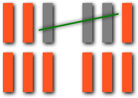

The line game is a turn based strategy game where the goal is to make the opponent mark off the last line.
All the moves shown in this section are valid. In each move one or more lines were marked off and no move crossed off lines in separate 'groups'. |
|  | ||
All the moves in this section are invalid. |
||
To mark off lines, simply drag the cursor over a group of lines to select them and then release the button to mark them off. As you drag the cursor, the lines that you are marking off will change color to gray to indicate that you have selected them for being marked off. If you an attempt to do an illegal move such as marking off no lines or lines in different groups, the interface will notify you and allow you to then attempt a valid move. Via the game controls you can also control various game options.
This tutorial will teach you the strategy for playing 'The Line Game' by exposing you to various scenarios. These scenarios will help you recognize 'trap scenarios', that is scenarios that are not winnable for your your opponent if you continue to make the correct moves. For our first example we have an obvious trap scenario in which the player who has the current turn will not be able to win the game.
Given that the above scenario is one which you want to enforce your opponent into, what move would you do in the following scenario?
Lets show another trap scenario.
How would you win this case?:
Finally, one last trap scenario to try out. With the '3,2,1', the player going second can either force their opponent into a scenario of '2,2' or '1' or '1,1,1' therefore guaranteeing a win.
You have now seen several different trap scenarios, there are of course many more. With this knowledge you should be able to do well against the 'Intermediate' difficulty level. To defeat a higher difficulty level you will likely need knowledge of more trap scenarios. You can discover more of these trap scenarios on your own or also the 'Theory' section will also discuss more trap scenarios. This concludes our tutorial.
The goal is to put one's opponent in a position which they cannot win. One such scenario is when there are two groups of two lines left. We'll notate this as '2,2' and you can click on the notations in this section to load the specified scenario into the 'Custom Play' module. Lets observe a '3,3' scenario- this too turns out to be a trap scenario as the player going first will give their opponent the opportunity to force them into a '2,2' situation or a '1,1,1' or a '1' situation. '4,4' also turns out to be a trap scenario, any pair of numbers which the number is greater than 1, examples: ([2,2],[3,3]etc..) are a trap scenario.
Trap scenarios typically can be added to one another to create other trap scenarios, '3,2,1' is a trap scenario and so is '2,2'- and based on this building rule then so is '3,2,2,2,1' and so is '5,5,3,2,2,2,1' which is '3,2,2,2,1' plus '5,5'. The prior statement said typically, that is because combining '3,2,1' and '1,1,1' into '3,2,1,1,1,1' is not a trap scenario. Only trap scenarios which consist entirely of an odd number of ones('1' or '1,1,1' or '1,1,1,1,1' etc...) are non-addable. Then there is also an additional scenario which while not a trap scenario by itself- '1,1'- can be added to any trap scenario to make another trap scenario ('2,2' and '1,1' together as '2,2,1,1' is a trap scenario.)
Here is a listing of some various scenarios:
| Scenario | Trap scenario? | Addable? |
|---|---|---|
| 3,2,1 | true | true |
| 5,4,1 | true | true |
| 6,4,2 | true | true |
| 5,4,3,2 | true | true |
| 6,5,2,1 | true | true |
| 7,5,3,1 | true | true |
| 1,1 | false | true |
| Pairs greater than 1 ex: [2,2],[3,3], etc... |
true | true |
| Any odd number of 1s | true | false |
'The Line Game' is similar to certain other turn based strategy games such as checkers in that one is at an advantage or disadvantage based on whether or not it's one's turn and the position on the board- and this includes the start of the game. With the line game, scenarios such as 7,5,3,1 and 7,7,7,7 and the 'extended' layout- the player going first is starting in a trap scenario and cannot win if their opponent makes the correct moves.